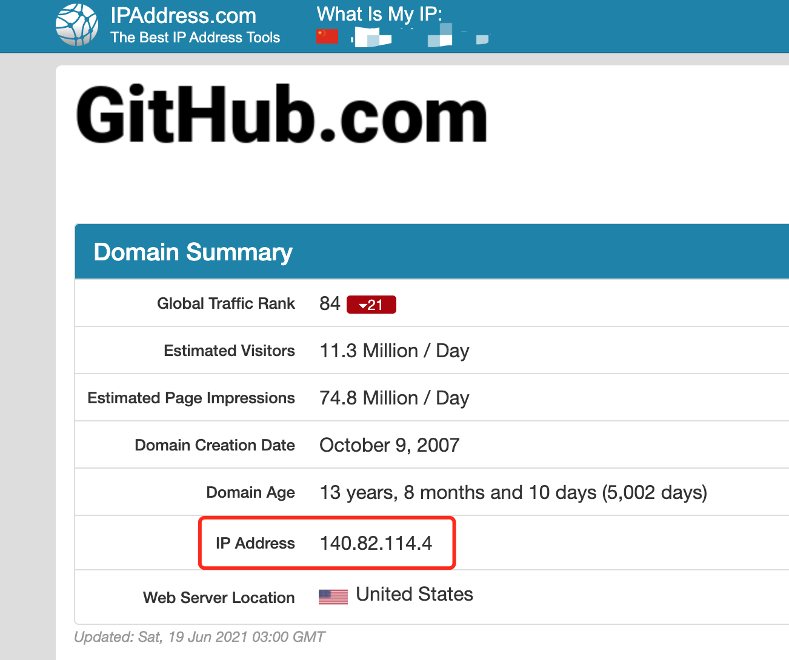
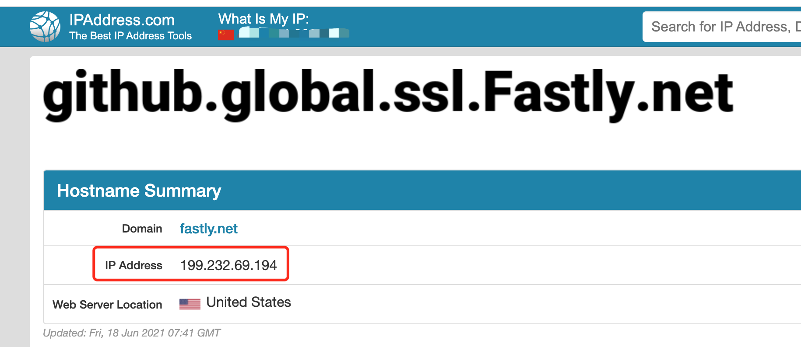
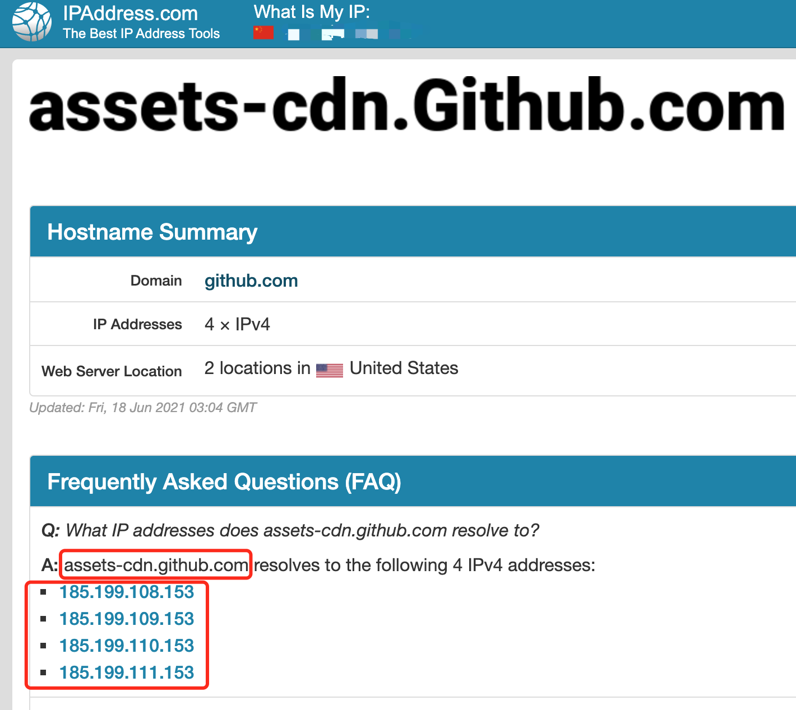
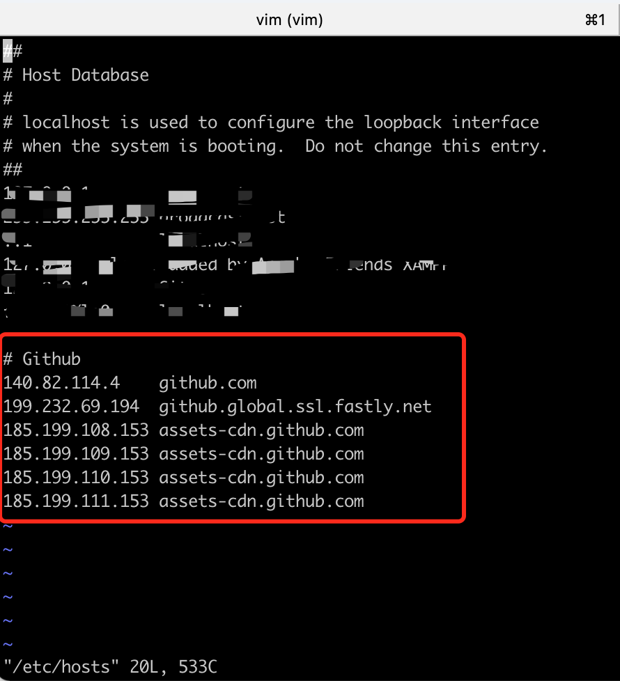

出现的问题
在使用github的时候，执行git pull或者git push时，经常会出现以下错误：
【Failed to connect to github.com port 443: Operation timed out】
这个时候就一通百度、google发现有解决方案：
1 | // 注意啊、这个是不行的 |
这个时候你可能觉得：OK终于解决了。
但是，可能再你下次使用的时候又会出现类似的问题，或者又有新的问题出现。
解决方案
step 1
打开网站：https://github.com.ipaddress.com/

web页面不要关，一会要用
step 2
打开网站：https://fastly.net.ipaddress.com/github.global.ssl.fastly.net

web页面不要关，一会要用
step 3
打开网站https://github.com.ipaddress.com/assets-cdn.github.com

web页面不要关，一会要用
step 4
打开系统host，进行编辑，我这里使用的是Mac，命令如下：
1 | sudo vim /etc/hosts |
sudo命令需要输入密码，之后，把我们上面打开的3个web对应的ip和host绑定，如下图：

1 | # ip 对应的host |
ip以自己打开的那3个web显示的为准。Windows请自行百度如何操作host。
step 5
如果设置了http.proxy和https.proxy http/https代理，需要取消代理。
1 | git config --global --unset http.proxy |
step 6
刷新DNS，如果机型不同，不起作用，请自行查看还原OS X 中的DNS缓存
1 | https://support.apple.com/zh-cn/HT202516 |
到这里就可以正常使用了。